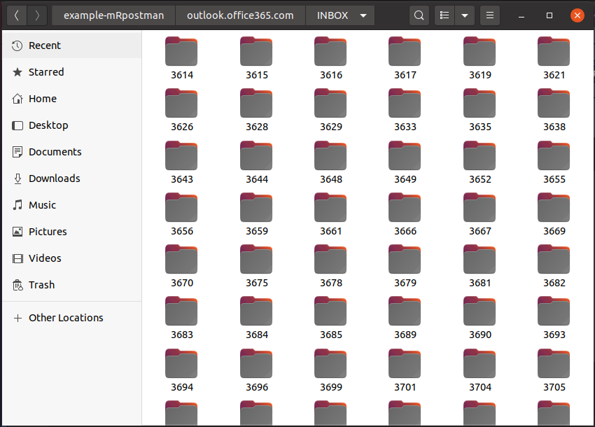
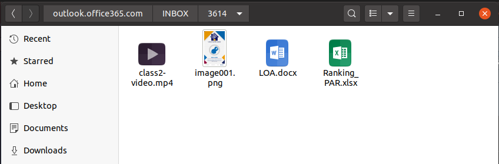

mRpostman basics
basics.RmdIntroduction
mRpostman is an easy-to-use IMAP client that provides tools for message searching, selective fetching of message attributes, mailbox management, attachment extraction, and several other IMAP features, paving the way for email data analysis in R. To do so, this package makes extensive use of the {curl} package and the libcurl C library.
In this vignette, we present all available methods and functions of this package, but not all the possibilities one can explore.
IMPORTANT:
In version
0.9.0.0,mRpostmanwent trough substantial changes, including ones that have no backward compatibility with versions<= 0.3.1. A detailed vignette on how to migrate your mRpostman’s deprecated code to the new syntax is available at “Migrating old code to the new mRpostman’s syntax”.Old versions of the libcurl C library ({curl}’s main engine) will cause malfunctioning of this package. If your libcurl’s version is above 7.58.0, you should be fine. If you intend to use OAuth 2.0 authentication, then you will need libcurl >= 7.65.0. To know more about the OAuth 2.0 authentication in this package, refer to the “Using IMAP OAuth2.0 authentication in mRpostman” vignette.
Authentication
There are two ways of connecting to your IMAP server: using plain or OAuth2.0 authentication. In this vignette, we only describe the plain authentication process. If you want to use OAuth2.0 authentication, please read the aforementioned vignette.
Allowing less secure apps access
When using plain authentication, most of the mail providers will require the user to enable less secure apps access. Once it is done, you will be able to access your mailbox using a “third party app” as mRpostman.
See the README.md for more details on how to allow less secure apps access in some of the most known mail providers.
If you are using Outlook - Office 365, there’s no need to make any external configuration.
Package Structure
The package is now implemented under a OO framework, using an R6 class. The main functionalities of mRpostman are implemented as methods of the R6 class called ImapCon. There are also a few independent functions. All methods and functions are described below:
-
configuration methods:
configure_imap(),reset_url(),reset_username(),reset_password(),reset_verbose(),reset_buffersize(),reset_timeout_ms(),reset_xoauth2_bearer(); -
server capabilities method:
list_server_capabilities(); -
mailbox operations methods:
list_mail_folders(),select_folder(),examine_folder(),rename_folder(),create_folder(),list_flags(); -
single-search methods:
search_before(),search_since(),search_period(),search_on(),search_sent_before(),search_sent_since(),search_sent_period(),search_sent_on(),search_string(),search_flag(),search_smaller_than(),search_larger_than(),search_younger_than(),search_older_than(); -
the custom-search method and its helper functions:
search();- relational operators functions:
AND(),OR(); - criteria definition functions:
before(),since(),on(),sent_before(),sent_since(),sent_on(),string(),flag(),smaller_than(),larger_than(),younger_than(),older_than();
- relational operators functions:
-
fetch methods:
fetch_body(),fetch_header(),fetch_text(),fetch_metadata(),fetch_attachments_list(),fetch_attachments(); -
attachments methods:
list_attachments(),get_attachments(),fetch_attachments_list(),fetch_attachments(); -
complementary methods:
copy_msg(),move_msg(),esearch_min_id(),esearch_max_id(),esearch_count_msg(),delete_msg(),expunge(),add_flags(),remove_flags(),replace_flags().
1) How do I start? (Connection configuration)
After enabling (if needed) “less secure apps access” in your mail provider or obtaining an OAuth2.0 token, you have to configure an IMAP connection:
library(mRpostman)
# IMAP settings
# Outlook - Office 365
con <- configure_imap(
url="imaps://outlook.office365.com",
username="user@your_company.com",
password=rstudioapi::askForPassword()
)
# Gmail
con <- configure_imap(
url = "imaps://imap.gmail.com",
username = "user",
password = rstudioapi::askForPassword()
)
# Hotmail
con <- configure_imap(
url = "imaps://imap-mail.outlook.com",
username = "user@hotmail.com",
password = rstudioapi::askForPassword()
)
# Yahoo Mail
con <- configure_imap(
url="imaps://imap.mail.yahoo.com/",
username="your_user",
password=rstudioapi::askForPassword()
)
# AOL Mail
con <- configure_imap(
url="imaps://export.imap.aol.com/",
username="your_user",
password=rstudioapi::askForPassword()
)
# Yandex Mail
con <- configure_imap(
url="imaps://imap.yandex.com",
username="your_user",
password=rstudioapi::askForPassword()
)
# ... and any other mail provider with IMAP supportOther useful options are: timeout_ms, verbose = TRUE, buffersize. Further {curl} options related to IMAP functionalities can be passed to configure_imap(), but you probably won’t need it. See curl::curl_options().
Since version 0.9.0.0, this package provides more flexibility to the user in the sense that you can modify the connection parameters for specific commands or parts of a script, using the reset_*() methods. This prevents users from having to call configure_imap() multiple times during a session or in a script. It is particularly useful when the user is going to perform some fetch operation, for example. In this case, it is recommended to increase the timeout_ms and set verbose = FALSE.
The con object that we created in the example above has the ImapCon R6 class. Now, almost 99% of the other IMAP commands to be performed on the server will be called following the structure: con$method(). The exceptions are the list_attachments() function and the helper functions of the custom-search group.
As you will see, the R6 framework combined with {curl} will make this package works such a session-based IMAP client. Besides this, for some commands, users will be able to use the tidy approach with pipes. All this together provides an elegant way of accessing your IMAP provider, searching and fetching emails, and managing your mailbox as well.
2) Server capabilities
Once the connection is configured, it is important to know which capabilities your IMAP provider offers to users. This impacts on which type of operations you are allowed to perform. For example, if your server has the WITHIN extension you can use the WITHIN search methods search_younger_than() and search_older_than(); if the server has the ESEARCH capability, besides being allowed to use the esearch_*() methods, you can optimize all your search functions with the esearch = TRUE parameter; if you see the MOVE capability, then you can use the move_msg() method. Therefore, to know all your server capabilities, you can use list_server_capabliltites.
3) Mailbox commands
3.2) Creating a new folder
Except for examine_folder() and rename_folder(), from now on, you will have to select a folder to issue further commands.
3.3) Selecting a folder
Probably, the main folder in your mailbox will be the "INBOX". You can select it without having to worry about the case of the letters. However, all the other folders in a mailbox are case sensitive.
3.4) Examining a folder
Count the number of existent and recent messages in the previously selected folder.
If you want to examine a folder that is not the currently selected one (INBOX), you can achieve this by specifying the name.
3.5) Renaming a folder
The following will rename the selected folder.
There is a reselect argument, which by default is set to TRUE. This will cause the automatic re-selection of the new folder name.
If you want to rename a folder that is different from the currently selected one (CRAN), you can achieve this by specifying the name.
4) Single-search
All search methods will return a numeric vector containing the results from the search. This allows users to chain fetch operations together with search one. You can also NEGATE all search expressions by setting negate = TRUE.
If your server supports ESEARCH, we recommend you to use it. It will prevent your results from being truncated when there are too many messages ids and you didn’t set a high buffersize in confiure_imap()1. With “ESEARCH”, the results will be condensed to groups of sequences similar to what does. For instance, if your search returns 10000 results, it is better to have condensed groups such as 1:10, 12, 23:27, ... instead of a sequence of 1, 2, 3, 4, 5, 6, ..., 10, 12, 23, 24, 25, .... If you can’t use ESEARCH, or if your results are being truncated even with ESEARCH, you can try to increase your buffersize in configure_imap() to avoid this.
4.1) Search by date
search_before(), search_since(), search_on(), and search_period() use internal date, which reflects the moment when the message was received. search_sent_before(), search_sent_since(), search_sent_on(), and search_sent_period() use the RFC-2822 date header (origination date), which “specifies the date and time at which the creator of the message indicated that the message was complete and ready to enter the mail delivery system” (Resnick, 2008). Dates in both methods must be the same most of the time. The difference may occur when you copied or moved some messages between folders. In this case, the RFC-2822 date header of the copied/moved messages in the destination folder will point out to the date of the copy. Another difference is that searching by the internal date will probably be faster because this information is kept in a database outside the message.
4.1.1.1) Before a date
You can use the “UID” (unique identifier) instead of the message sequence number 2, and one or more flags as an additional filter to your search. In fact, you can use this in almost every search method of this package.
res <- con$search_before(date_char = "07-Sep-2020",
use_uid = TRUE,
flag = c("ANSWERED", "SEEN"))
resRemember that, if your IMAP server has the ESEARCH capability, you can use it. Gmail is one of the mail providers that allow it.
res <- con$search_before(date_char = "07-Sep-2020",
use_uid = TRUE,
flag = c("ANSWERED", "SEEN"),
esearch = TRUE)
resYou can also NEGATE the statement to search for messages NOT BEFORE a date, for example:
4.1.1.2) Since a date
The previous operation, in which we have used negate = TRUE, is equivalent to search for messages received SINCE a DATE:
4.1.1.3) By period
You can NEGATE a period search as well. In this case, the search will exclude messages from the specified period.
4.1.2.1) Sent before a date
You can modify some of the search parameters as well:
res <- con$search_sent_before(date_char = "07-Sep-2020",
negate = TRUE,
use_uid = TRUE,
flag = c("ANSWERED", "SEEN"))
res4.2) Search by string
You can search for a simple string or compound expression either in the whole message, in a section, or in a specific header field. One important thing to know is that the SEARCH command in the IMAP server is not case sensitive.
You can also NEGATE the statement and search for messages (or a specific part of a message) not containing that string, and add additional flag filters as well.
For the next examples, we are going to select a different mail folder.
Searching in the “TO” header field:
Searching in the “FROM” header field:
Searching in the “SUBJECT” header field:
Searching in the “TEXT” section.
IMPORTANT: Since the text may contain raw data, it may not be a super-effective search. In this case, searching for a expression in the whole "BODY" may be preferred.
Searching in the “BODY” section.
4.3) Search by flag
con$search_flag(name = c("ANSWERED", "Seen"), use_uid = TRUE)Remember that you can check the available flags in a mail folder with list_flags().
4.5) Search by within extension
Severs with support to the “WITHIN” EXTENSION enable searching for messages within a span, i.e. younger than “x” seconds, or older than “x” seconds. This capability is really rare to find in IMAP servers, but mRpostman has two methods implemented for coping with this capability if it is available.
5) Custom-search
The search() method and its helper functions enable users to create a vast number of complex and customized search requests by combining different criteria, using all the types of searches previously presented in this document.
These are the helper functions you can use inside search():
- Relational operators:
AND(), andOR(); - Criteria definition:
before(),since(),on(),sent_before(),sent_since(),sent_on(),string(),flag(),smaller_than(),larger_than(),younger_than(), andolder_than().
NOTE: IMAP queries follows Polish notation, i.e. operators such as OR come before arguments, e.g. “OR argument1 argument2”. Therefore, the relational operators functions in this package should be used like the following examples: OR(before(date_char = "17-Apr-2015"), string(expr = "Jimmy", where = "FROM")). Even though there is no “AND” operator in the IMAP protocol, this package adds a helper function AND() to indicate multiple arguments that must be searched together, e.g. AND(since(date_char = "01-Jul-2018"), larger_than(size = 16000)).
Example 1: Searching for messages (in “INBOX”) containing the string “Kansas State University” in the “SUBJECT” header field AND that were received before “02-Jan-2020”.
con$select_folder(name = "INBOX")
res <- con$search(request = AND(string(expr = "Kansas State University", where = "SUBJECT"),
before(date_char = "02-Jan-2020")))
resExample 2: Searching (using UID) for messages received from “@k-state.edu” OR “@ksu.edu”.
6) Fetch
You can fetch the full content of messages, or their parts, such as the header, text, or specific metadata fields. Besides this, you can also fetch a message attachments list or the attachment files themselves, downloading them to the disk.
We usually fetch messages after a search operation. Given the output of the search functions in mRpostman, you can use the pipe %>% to chain the search and the fetch operations together. Using the base R approach is perfectly possible as well.
In the main fetch methods (those that are not related to attachment fetching), you can choose to write the fetch results to disk (working directory) using write_to_disk = TRUE. If you opt to do so, mRpostman saves the fetched content to a .txt file in the following folder structure: working directory > imap.server.url > mail folder name. The text files will be named after the id of the fetched message. If the operation was executed using the UID, the “UID” prefix is added to the file names.
IMPORTANT:
If the fetch operation is to be chained after a search, the
use_uidarguments in the two operations have to be the same. Otherwise, an error will occur or the fetch will be performed on wrong messages’ ids.It is always recommended to increase the timeout_ms before
fetch_body(),fetch_text(), andfetch_attachents()operations as sometimes the operation may hang for a few seconds while fetching the message parts.if you have configured a connection with
verbose = TRUE, it is extremely recommended that you reset it toFALSEbefore a fetching operation. Theverbose = TRUEoption fill the console with the whole flux of information between the server and the client, drastically slowing the speed of the process and your R session.
6.1) Fetch body
# increasing timeout_ms
con$reset_timeout_ms(30000) # ... to 30 secs
# and supposing that you had verbose = TRUE before
con$reset_verbose(FALSE)
# tidy approach
con$search_string(expr = "@k-state.edu", where = "FROM") %>%
con$fetch_body(write_to_disk = TRUE, keep_in_mem = FALSE)
# ---------------
# base R approach
res <- con$search_string(expr = "@k-state.edu", where = "FROM")
con$fetch_body(msg_id = res, write_to_disk = TRUE, keep_in_mem = FALSE)Since the goal here is to write the fetch results to disk, it is recommended that we set keep_in_mem = FALSE. This will optimize the whole operation because mRpostman will clean the memory after fetching each message as we are not going to use the results in our R session.
Our local folder will be populated with the .txt files of the fetched messages:

6.2) Fetch header
# tidy approach
out <- con$search_since(date_char = "15-Aug-2019", use_uid = TRUE) %>%
con$fetch_header(use_uid = TRUE, fields = c("DATE", "SUBJECT"))
out
# ---------------
# base R approach
res <- con$search_since(date_char = "15-Aug-2019", use_uid = TRUE)
out <- con$fetch_header(use_uid = TRUE, fields = c("DATE", "SUBJECT"))
outPlease, note that, in the example above, we are saving the results to the out object in our R session. Also note that we are setting use_uid = TRUE in both search and fetch requests.
6.3) Fetch text
fetch_text() is almost as costly as fetch_body(). So, it is a good idea to keep a “high” timeout_ms.
6.4) Fetch metadata
out <- con$search_on(date_char = "15-Aug-2019", use_uid = TRUE) %>%
con$fetch_metadata(use_uid = TRUE, metadata = metadata = c("INTERNALDATE", "UID", "ENVELOPE"))If nothing is specified to the metadata argument, all the metadata fields are fetched by default. To know which are the metadata options of a message, refer to metadata_options().
There are two more fetch methods, but they are going to be presented in the next session since they are related to a very special fetch operation.
7) Attachments
Previously, mRpostman had two attachment-related functions: list_attachments() and get_attachments(). Both were to be used after a fetching operation because they would use the content fetched in a previous step to parse the attachments list and/or decode the content to files. These methods are still available in the current version of the package. However, two more methods were implemented in version 0.9.0.0: fetch_attachments_list() and fetch_attachments(). These methods are not contingent on a previous fetch operation, since they are a properly fetch operation. Therefore, if the user is only interested in obtaining the attachments list or downloading the attachments of a set of messages, the last two options are considerably more efficient.
Let’s take a look at the first two attachments functionalities available in mRpostman.
7.1) Dependent attachment operations
The dependent operations are comprised of a function list_atachments() and a R6 method get_attachments(). We call them dependent operations because they dependent on a previous fetch operation with fetch_body() or fetch_text().
IMPORTANT: Since these are fetch-dependent operations, you cannot set keep_in_mem = FALSE in the fetch_body()/fetch_text() step if you intend to list or get attachments after fetching your messages.
7.1.1) Listing attachments
This will list your attachments file names for each fetched message.
# using fetch_body()
con$search_since(date_char = "23-Sep-2019") %>%
con$fetch_body(write_to_disk = TRUE) %>%
list_attachments() # don't need to specify the connection object here
# ------------------
# using fetch_text()
con$search_since(date_char = "23-Sep-2019") %>%
con$fetch_text(write_to_disk = TRUE) %>%
list_attachments() # don't need to specify the connection object hereIn both examples, the whole message body(ies) or text will be saved to the disk, but a copy will be kept in the R session. This copy is passed forward to list_attachments(), which, by its turn, finds and extract the filenames and the type of the “Content-Disposition” for the part where the attachment were found.
7.1.2) Extracting Attachments
get_attachments() will try to decode base64 text inside your message to the appropriate file extension. This will create a folder with the inside the structure wd > imap.server.name > mail folder > msg_id. The attachment(s) will be inside their respective message folder.
# using fetch_body()
con$search_since(date_char = "23-Sep-2019") %>%
con$fetch_body(write_to_disk = TRUE) %>%
con$get_attachments()
# ------------------
# using fetch_text()
con$search_since(date_char = "23-Sep-2019") %>%
con$fetch_text(write_to_disk = TRUE) %>%
con$get_attachments()The results in your local folder will be like this:

7.2) Optimized attachment operations
As we stated before, the following two methods are not contingent on a previous fetch step because they execute a fetching operation. Hence, they consist of an optimized alternative for attachments listing and downloading.
IMPORTANT: The same recommendations for the other fetch methods hold in this case: set verbose = FALSE and a high timeout_ms.
8) Complementary operations
Here we present other functions to perform very useful complementary IMAP operations.
8.1) Copy message(s)
Copying search results from “INBOX” to “K-State” folder:
con$select_folder(name = "INBOX")
con$search_since(date_char = "10-may-2019") %>%
con$copy_msg(to_folder = "K-State")It will automatically re-select the destination folder unless the user sets reselect = FALSE.
8.2) Get minimum message id
This operation depends on the ESEARCH capability. It will retrieve the minimum message id containing a specific flag(s) in the selected mail folder.
con$esearch_min_id(flag = c("Answered", "Seen"))8.3) Get maximum message id
This operation also depends on the ESEARCH capability. It will retrieve the maximum message id containing a specific flag(s) in the selected mail folder.
con$esearch_min_id(flag = c("Answered", "Seen"))8.4) Count messages
This operation also depends on the ESEARCH capability. It will retrieve the number of messages with a specific flag(s) in the selected mail folder.
con$esearch_count(flag = c("Answered", "Seen"))8.5) Delete message(s)
This method marks one or more messages with the “\Deleted” system flag. Some servers automatically delete messages marked with this flag, and others require the EXPUNGE command to permanently delete the e-mail.
Deleting an specific “msg_id” without a previous search:
8.6) Expunge
Expunges message(s) marked with the “DELETED” flag in a mailbox or a specific message using the msg_uid argument. Please, note that the this requires the unique id, not sequence numbers. Therefore, we set use_uid = TRUE
8.7) Add/Remove/Replace flags
Adding, removing and replacing one or more flags to messages.
IMPORTANT: Differently from the search functions where the (system) flags passed as additional parameters to search methods did not contain “\”, the add/replace/remove_flags() methods require the double backslash when referring to system flags. You can know which are the flags of a mail folder, and if custom flags are allowed, using list_flags().
8.7.2) Replace flags
Replaces the existent flags by the one(s) specified in the method.
con$search_since(date_char = "01-Sep-2020", use_uid = TRUE) %>%
con$replace_flags(flags_to_set = c("\\Seen", "\\Flagged", use_uid = TRUE)8.7.3) Remove flags
Now we have the flags_to_UNset argument.
con$search_since(date_char = "01-Sep-2020", use_uid = TRUE) %>%
con$remobe_flags(flags_to_unset = c("\\Seen", "\\Flagged", use_uid = TRUE)References
Babcock, N. (2016), Introduction to IMAP, Blog, May 2016, https://nbsoftsolutions.com/blog/introduction-to-imap.
Crispin, M. (2003), INTERNET MESSAGE ACCESS PROTOCOL - VERSION 4rev1, RFC 3501, March 2003, https://tools.ietf.org/html/rfc3501.
Freed, N. and Borenstein, N. (1996), Multipurpose Internet Mail Extensions (MIME) Part Two: Media Types, RFC 2046, November 1996, https://tools.ietf.org/html/rfc2046.
Gungor, A. (2018), Using IMAP Internal Date for Forensic Email Authentication, Articles, Forensic Focus, https://www.forensicfocus.com/articles/using-imap-internal-date-for-forensic-email-authentication/
Heinlein, P. and Hartleben, P. (2008). The Book of IMAP: Building a Mail Server with Courier and Cyrus. No Starch Press. ISBN 978-1-59327-177-0.
Resnick, P. (2001), Internet Message Format, RFC 2822, April 2001, https://tools.ietf.org/html/rfc2822.
Resnick, P. (2008), Internet Message Format, RFC 5322, October 2008, https://tools.ietf.org/html/rfc5322.
Ooms, J. (2020), curl: A Modern and Flexible Web Client for R. R package version 4.3, https://CRAN.R-project.org/package=curl
Stenberg, D. Libcurl - The Multiprotocol File Transfer Library, https://curl.haxx.se/libcurl/
This is a known bug of the libcurl library. Please, refer to this LINK↩︎
A message sequence number is a message’s relative position to the oldest message in a mail folder. It may change after deleting or moving messages. If a message is deleted, sequence numbers are reordered to fill the gap. If
use_uid = TRUE, the command will be performed using the “UID” or unique identifier, and results are presented as such. UIDs are always the same during the life cycle of a message in a mail folder.↩︎